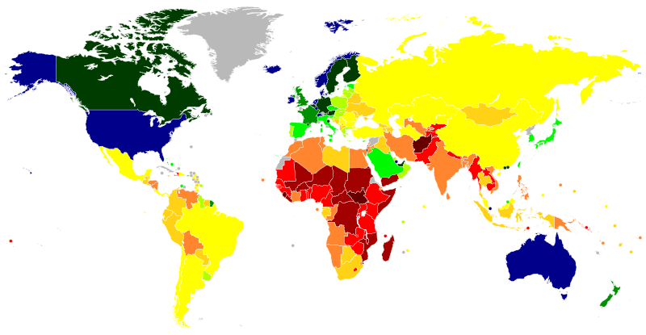
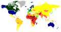

File:Map of countries by GDP (nominal) per capita in 2023.svg

{kind=link}
Size of this PNG preview of this SVG file: 800 × 414 pixels. Other resolutions: 320 × 166 pixels | 640 × 331 pixels | 1,024 × 530 pixels | 1,280 × 663 pixels | 2,560 × 1,326 pixels | 2,192 × 1,135 pixels.
{kind=link}
{kind=link}
{kind=link}
{kind=link}
{kind=link}
{kind=link}
{kind=link}
Original file (SVG file, nominally 2,192 × 1,135 pixels, file size: 1.64 MB)
| This is a file from the Wikimedia Commons. Information from its description page there is shown below. Commons is a freely licensed media file repository. You can help. |
_per_capita_in_2023.svg){kind=link}
.svg){kind=link}
File history
Click on a date/time to view the file as it appeared at that time.
| Date/Time | Thumbnail | Dimensions | User | Comment | |
|---|---|---|---|---|---|
| current | 19:23, 15 December 2023 | 2,192 × 1,135 (1.64 MB) | Allice Hunter | Update with October.2023 values | |
| 19:15, 8 June 2023 |  | 2,192 × 1,135 (1.64 MB) | Allice Hunter | Uploaded a work by {{u|Allice Hunter}} from *Blank map: File:World map (Miller cylindrical projection, blank).svg * Data from IMF: with UploadWizard |
{kind=link}
.svg){kind=link}
File usage
The following pages on the English Wikipedia use this file (pages on other projects are not listed):
Global file usage
The following other wikis use this file:
- Usage on es.wikipedia.org
- Usage on fa.wikipedia.org
- Usage on fr.wikipedia.org
- Usage on hu.wikipedia.org
- Usage on ja.wikipedia.org
- Usage on kn.wikipedia.org
- Usage on lt.wikipedia.org
- Usage on pl.wikipedia.org
- Usage on pt.wikipedia.org
- Usage on ro.wikipedia.org
- Usage on ru.wikipedia.org
- Usage on uk.wikipedia.org
_per_capita_in_2023.svg){kind=link}